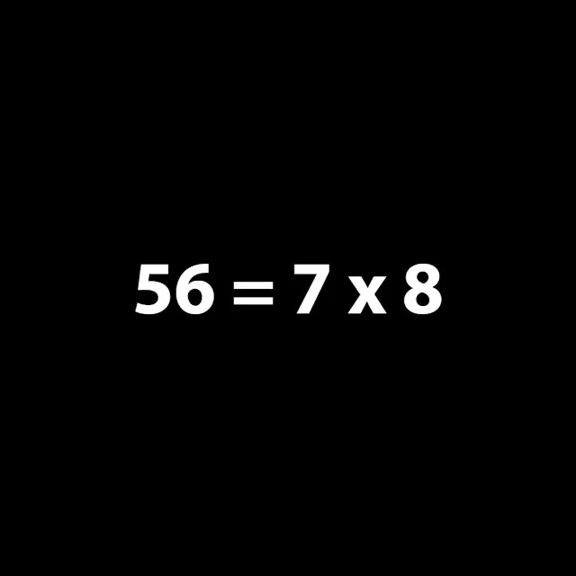
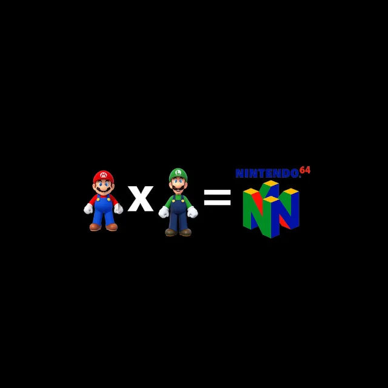
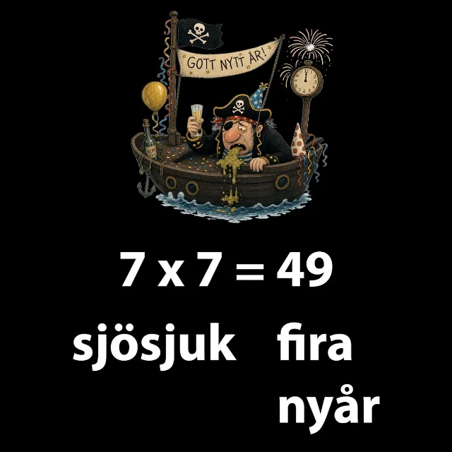
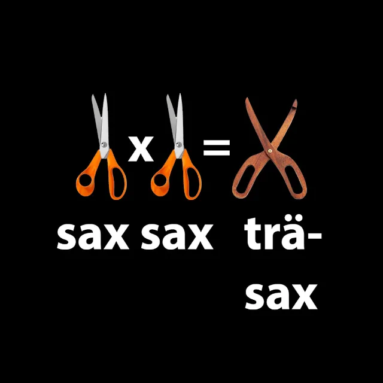
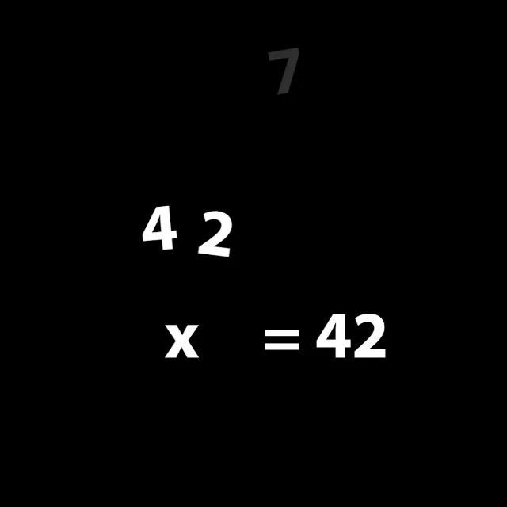
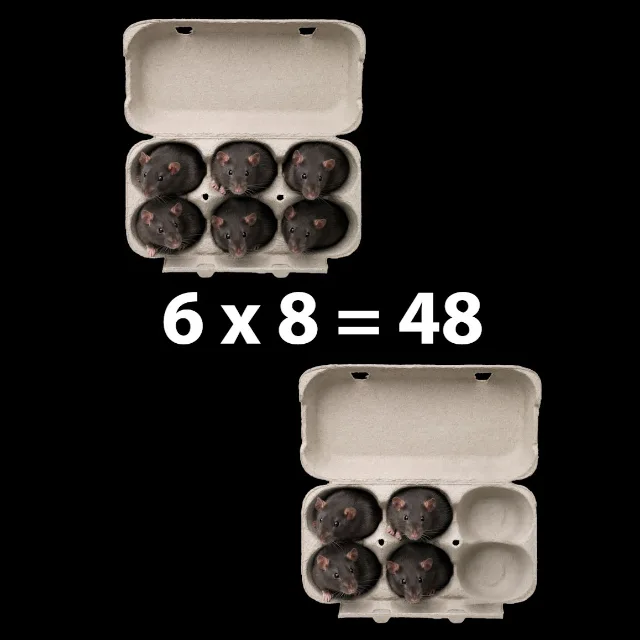

Tittar man närmre är det bara en handfull man faktiskt behöver lägga på minnet. Så här krymper högen:
4 × 6 är samma sak
som 6 × 4
Det spelar ingen roll i vilken ordning talen står. Kan du den ena kan du också den andra, där försvinner nästan hälften av tabellen direkt!
4 × 6 = 6 × 4 = 24Ingenting händer!
Multiplicerar du med 1 är talet kvar precis som det var.
1 × 7 = 7Lägg till en nolla
på slutet!
Halvera talet och
ta sedan gånger tio!
Fem är ju hälften av tio.
8 × 5 = 4 × 10 = 40Siffrorna i svaret blir
9 tillsammans
Första siffran är alltid ett mindre än talet du gångrar med, och svarets två siffror blir 9 ihop.
7 × 9 → först 6, sedan 3 → 63Dubbla talet!
Gånger två är bara att plussa talet med sig självt, enkel addition alltså.
6 × 2 = 6 + 6 = 12Dubbla två gånger!
Fyrans tabell är dubbelt så mycket som tvåans.
6 × 4: 6 → 12 → 24Dubbla talet och lägg
sedan till det en gång till!
7 × 8 = 56
”5, 6, 7, 8!”

Skriv svaret först, så blir det 56 = 7 × 8. Det är bara siffrorna i ordning: 5, 6, 7, 8!
8 × 8 = 64
”Mario och Luigi!”

Mario och Luigi ser ut som två åttor, och de kommer från Nintendo 64. Alltså: 8 × 8 = 64!
7 × 7 = 49
”Sjösjuk? Fira nyår!”

Sju sju låter som ”sjösjuk” och fyra nio som ”fira nyår”. Tänk dig en sjösjuk pirat som firar nyår: 7 × 7 = 49!
6 × 6 = 36
”Sax, sax, träsax!”

Sex låter som sax: ”sax, sax, träsax”, 6, 6, 3, 6. Tänk dig en träsax så sitter den i ett klipp: 6 × 6 = 36!
6 × 7 = 42
”Hackan!”

7:an ser ut som en hacka som hackar 6:an i två bitar: en 4:a och en 2:a (4 + 2 = 6). Så 6 × 7 = 42!
6 × 8 = 48
”Sex råttor!”

Åtta rimmar på råtta: sex råttor! Två äter upp varandra och kvar är fyra råttor, 4 och 8 ger 48. Så 6 × 8 = 48!